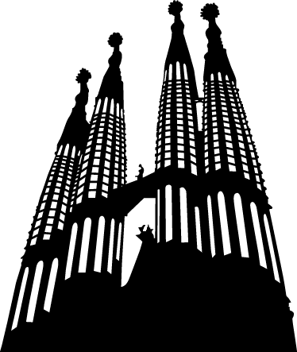
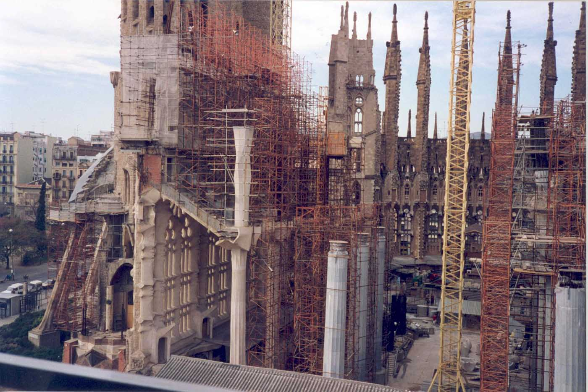
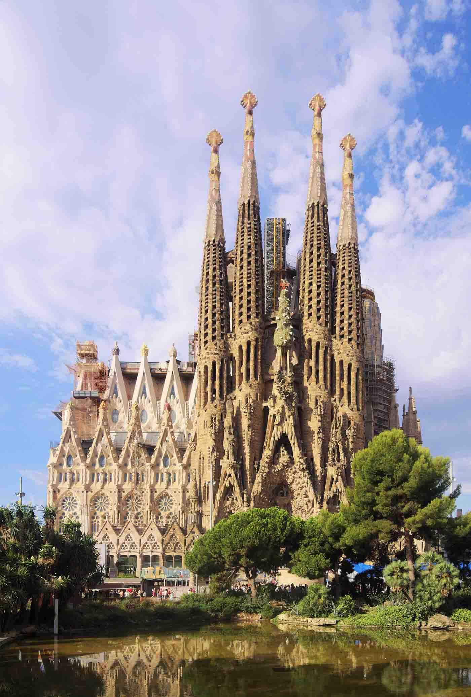
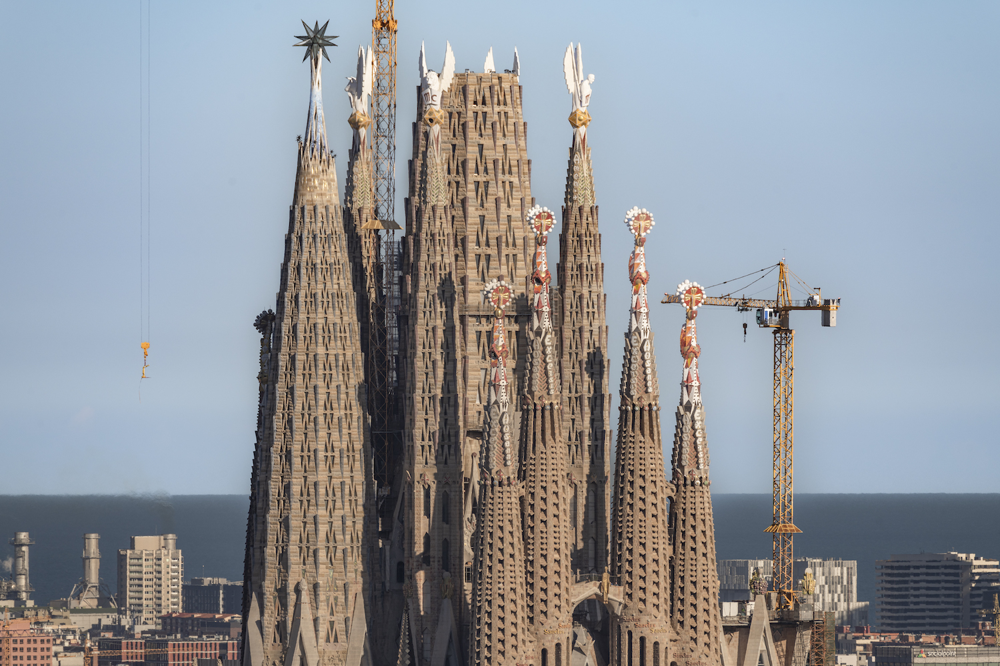
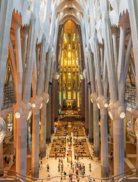
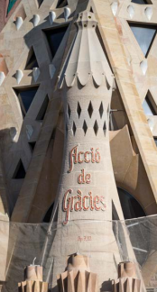

Entramos en materia
Responde y comenta estas preguntas con tus compañero/as:
- ¿Te interesa la arquitectura?
- ¿Te gusta la arquitectura de Barcelona?
- ¿Qué monumentos o edificios te gustan más de la ciudad?
- ¿Has visitado el interior de la Sagrada Familia? ¿Cumplió tus expectativas?
- ¿Te recuerda a algún otro edificio?
- ¿Te parece el monumento más importante de España?
- ¿Cuál piensas que es el monumento más importante de tu país? ¿Por qué?

Actividad 1: Vocabulario arquitectónico
Relaciona los siguientes términos arquitectónicos con su definición correspondiente:
- Elemento decorativo y puntiagudo que corona las torres o fachadas del edificio.
- Representación tridimensional de una figura, tallada en diferentes materiales.
- Elemento arquitectónico vertical de soporte estructural, normalmente cilíndrico.
- Técnica artística donde las figuras talladas sobresalen de la superficie general.
- Estructura curva usada para cubrir un espacio y soportar una estructura superior.
Actividad 2: Historia del edificio
A continuación se puede ver la evolución del edificio de la Sagrada Familia a lo largo de los años. Con ayuda del vocabulario al lado de cada época, escribe un párrafo descriptivo que abarque todo ese periodo de tiempo.

1925
- Torres: Primeras cuatro torres de los Apóstoles ya construidas.
- Fachada: Fachada del Nacimiento, ya decorada con esculturas religiosas y elementos simbólicos.
- Transepto: Todavía no construido, espacio transversal que cruza la nave principal.
- Campanario: Cada torre funciona como campanario, el dedicado al apóstol Bernabé fue el único que Gaudí pudo dejar terminado.
- Portal: Entrada inferior visible con decoración en relieve, representa escenas bíblicas.

1976
- Fachada: Fachada de la Pasión en construcción.
- Pináculos: Remates en forma puntiaguda en lo alto de las torres.
- Rosetón: Ventana circular visible sobre la entrada de la primera fachada.
- Contrafuertes: Estructuras inclinadas en la parte inferior que sirven de refuerzo lateral al edificio.

1992
- Presviterio: Espacio elevado al fondo donde se ubicará el altar.
- Ventanales: Aberturas por donde entra la luz natural, por ahora sin vidrieras.
- Columnas: Estructuras que sostendrán el peso del edificio.
- Transepto: Nave transversal que cruza el edificio principal.

2017
- Piedra: En el estado de este material se puede apreciar el cambio de siglo.
- Árbol de la vida: Escultura que se encuentra por encima de la escena del nacimiento.
- Portales: Los tres portales (Esperanza, Caridad y Fé) completados en la fachada del Nacimiento.
- Vidrieras: Estructura decorativas de cristales de colores colocadas en los ventanales.
- Gabletes: Elemento arquitectónico que sirve como remate de forma triangular.

2025
- Pináculos: Todas las torres están decoradas en sus puntas.
- Esculturas: Se pueden obserbar las cuatro de los Evangelistas (animales) y la de María (estrella).
- Torres Falta la central dedicada a Jesucrito, en un futuro coronada por una cruz.
Actividad 3: Enfrentamiento de fachadas
Responde a estas preguntas para hacer una comparación de las fachadas:
- ¿Qué representa cada una?
- ¿Qué formas predominan?
- ¿Qué esculturas, escenas o detalles se pueden ver en ambas?
- ¿Qué orden estructural tienen?
- ¿Qué te hacen sentir?
- ¿Te parece el monumento más importante de España?
- ¿Cuál te gusta más? ¿Por qué?
Actividad 4: El interior del templo
Completa el texto informativo sobre una de las partes más importantes de una iglesia: el ábside. Para ello, utiliza las palabras proporcionadas.
El ábside es la parte más importante de una , pues es en él donde se sitúa el , que en el caso de la Sagrada Familia, conectará simbólicamente con la torre de Jesús, que se alza justo sobre la bóveda del ábside. Ocupa la del templo y es una de las pocas partes en las que todavía encontramos algunas reminiscencias neogóticas (la planta, la fachada y las capillas absidiales). Está situado justo encima de la y comparte con esta la planta semicircular.
Consta de tres partes: el presbiterio, el deambulatorio que lo rodea y las siete absidiales, con dos grandes de caracol a cada lado que permiten el acceso a la cripta y a las torres centrales aún en construcción.


Actividad 5: Otras obras de Gaudí
Aquí tienes otros edificios diseñados por Antoni Guadí, escoge uno y exponlo a la clase.

Casa Vicens

Casa Batlló

Casa Milà
Reflexión
Comenta estas últimas cuestiones con tus compañero/as:

- Después de estas actividades, ¿te interesa más la Sagrada Familia?
- ¿Te interesa aprender léxico relacionado con la arquitectura?
- ¿En qué año piensas que se terminará la Sagrada Familia? ¿Irás a verla completa?
Si hay más tiempo, podéis investigar los Cuadernos informativos de la página web: